방송통신기사 (2006-03-05 기출문제)
1과목: 디지털 전자회로
1. 증폭기 입력측에 구형파를 가하고 출력측에서 측정된 상승시간(rise time)이 0.35[㎲]였다. 이 증폭기의 고역 3[㏈] 차단주파수는 몇 [㎒]인가?
- 0.5
- 1
- 2
- 10
(정답률: 알수없음)

2. 플립-플롭 4개로 구성된 계수기가 가질 수 있는 최대의 2진 상태는 몇 가지인가?
- 8가지
- 12가지
- 16가지
- 20가지
(정답률: 알수없음)
3. 다음 그림과 같은 비반전 연산 증폭기 회로에서 부하 RL에 흐르는 전류는? (단, R1=1[㏀], R2=2[㏀], R3=3[㏀], Vi=2[V] )
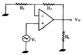
- 1[㎃]
- 2[㎃]
- 3[㎃]
- 4[㎃]
(정답률: 알수없음)
4. 부울
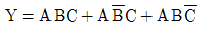
방정식 를 간단히 하면?- AB
- AC
- ABC
- A(B+C)
(정답률: 알수없음)
5. 진폭변조에서 반송파의 주파수를 fc 변조신호의 주파수를 fs라고 할 때, AM파의 대역폭은 다음 중 어떤 수식으로 표현되는가?
- fc + fs
- fc - fs
- fs
- 2fs
(정답률: 알수없음)
6. FM 변조에서 변조지수가 6이고 신호주파수가 3[㎑]일 때 주파수 편이는 얼마인가?
- 6[㎑]
- 9[㎑]
- 18[㎑]
- 36[㎑]
(정답률: 알수없음)
7. 다음 로직(LOGIC CIRCUIT)의 출력은?
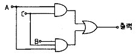
- AB
- AC
- ABC
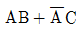
(정답률: 알수없음)
8. 차동증폭기의 동상제거비(COMMON MODE REJECTION RATIO)를 향상시키기 위한 방법으로 적합하지 않는 것은?
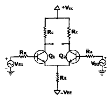
- hfe가 큰 트랜지스터를 선정한다.
- Emitter 저항 RE의 값을 높은 값으로 선정한다.
- 입력 임피던스를 높이기 위해 RS를 크게 선정한다.
- Q1, Q2는 전기적특성이 동일한 트랜지스터를 선정한다.
(정답률: 알수없음)
9. JK플립플롭(Flip-Flop)을 다음 그림과 같이 연결했을 때 어떤 것과 같은가?
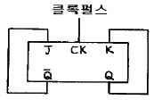
- D플립플롭
- RS플립플롭
- T플립플롭
- 래치(LATCH)
(정답률: 알수없음)
10. 그림과 같은 증폭호로에서 커패시터 C의 주된 역할은?
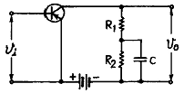
- 기생진동 방지용
- 발진방지용
- 정전용량 중화용
- 저주파 특성 개선용
(정답률: 알수없음)
11. one-short 멀티바이브레이터로부터 49[㎲]의 펄스폭이 주어질 때 이를 만드는데 필요한 대략 시정수는?
- 65[㎲]
- 70[㎲]
- 75[㎲]
- 80[㎲]
(정답률: 알수없음)
12. 그림과 같은 발진회로의 출력파형은?
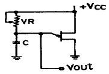
- 톱니파
- 정현파
- 구형파
- 펄스파
(정답률: 알수없음)
13. 그림과 같은 op증폭기의 출력전압 VO 구하시오. (단,
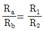
임)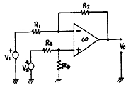
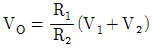

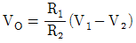
- R1R2(V2-V1)
(정답률: 알수없음)
14. 그림과 같은 연산증폭기의 -3[㏈]저역 하한주파수는? (단, 주파수대역은 중역(midband)에 속한다.)
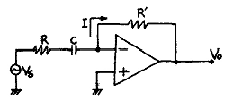
- 1/2πRC
- 1/2πR′C
- 1/2π(R+R′)C
- 1/2πRR'C
(정답률: 알수없음)
15. 다음 Karnaugh도를 간략화 한 결과는?
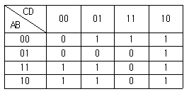
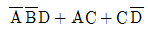
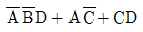
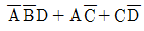
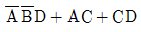
(정답률: 알수없음)
16. 증폭기 중에서 트랜지스터가 오직 반주기 동안만 활성영역에 있고 나머지 반주기 동안은 차단영역에 있는 증폭기는?
- A급 증폭기
- B급 증폭기
- AB급 증폭기
- C급 증폭기
(정답률: 알수없음)
17. 바이어스 전압에 따라 공간 전하용량이 달라지는 다이오드는?
- Zener Diode
- LCD
- Tunnel Diode
- Varactor Diode
(정답률: 알수없음)
18. 다음과 같은 정논리회로의 게이트 기능은?
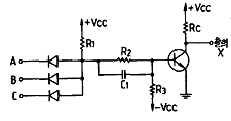
- NOR
- NOT
- NAND
- AND
(정답률: 알수없음)
19. Q가 10이고, 공진 주파수가 1[㎒]인 동조회로의 공진 시 임피던스(Impedance)는 약 얼마인가? (단, 1[mH]라 한다.)
- 15.7[㏀]
- 38.2[㏀]
- 51.4[㏀]
- 62.8[㏀]
(정답률: 알수없음)
20. 3개(A, B, C)의 입력 펄스에 대한 출력(X)동작은 어느 게이트에 해당하는가?
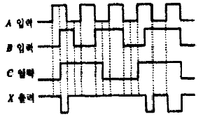
- AND
- NAND
- OR
- NOR
(정답률: 알수없음)
2과목: 방송통신 기기
21. 방송통신기기에 사용되는 측정 장비 중에서 출력 신호의 주파수가 일정한 범위에서 반복하여 변화하는 신호발생기를 무엇이라고 하는가?
- 스펙트럼 아널라이져
- 스위프 신호 발생기
- OTDR
- 벡터스코프
(정답률: 알수없음)
22. 다음 중 위성방송에서 사용되는 수신 안테나에 접속 되어 있는 컨버터는?
- MIC
- LNB
- SAW
- PPV
(정답률: 알수없음)
23. 옥외에서 2대 이상의 카메라를 사용하여 프로그램을 제작할 때 필요한 방송장비는?
- 믹서
- 앵글
- 영상스위치
- 디졸브
(정답률: 알수없음)
24. 다음은 인터넷 방송(Webcasting)의 기술 중에서푸시(push)기술의 용도에 관한 설명이다. 틀린 것은 ?
- 뉴스와 같은 일반적인 정보를 보내주는 정보제공이다.
- 소프트웨어의 업데이트를 위한 소프트웨어 배포 ㆍ 갱신형 서비스이다.
- 조직의 원할 한 커뮤니케이션을 위한 그룹웨어 내에서 제공되는 서비스이다.
- 인터넷 방송뿐만 아니라 공중파방송에서도 적용되었던 기술이다.
(정답률: 알수없음)
25. 우리나라에서 사용하고 있는 FM방송의 주파수 대역으로 옳은 것은?
- 88.1 ~ 108[㎓]
- 88.1 ~ 108[㎑]
- 88.1[㎑] ~ 108[㎑]
- 88.1[㎒] ~ 108[㎒]
(정답률: 알수없음)
26. TV방송의 전파 틈을 이용하여 뉴스나 일기예보 ㆍ 여행안내 등을 문자 ㆍ 도형 정보로 제공하는 방송 시스템은?
- 문자다중방송
- 정지화 방송
- 코드방송
- 유선방송
(정답률: 알수없음)
27. 우리나라에서 사용되는 아날로그 컬러TV의 방송방식은?
- PAL
- NTSC
- SECAM
- MUSE
(정답률: 알수없음)
28. 텔레비전의 수직 귀선기간에 삽입하는 신호가 아닌 것은?
- 문자 다중방송 신호
- VIT 코드 신호
- 음성 다중방송 Mode control 신호
- 음성신호
(정답률: 알수없음)
29. 다음 중 디지털로 제작된 비디오 신호, 오디오 신호, 데이터 신호 등의 입력받은 신호들을 다중화시켜 전송하는 디지털 방송장치는?
- 분배기(DA)
- 멀티플렉서(Multiplexer)
- up-converter
- 비디오믹서(VMU)
(정답률: 알수없음)
30. 영상을 분해하고 조립하는 능력을 나타내는 것은?
- 해상도
- 감도
- 선택도
- 안정도
(정답률: 알수없음)
31. 케이블 TV유선방송국의 주조정실에서 가입자측으로 신호를 전송하기 위하여 모든 신호가 집중 되는 부분을 무엇이라고 하는가?
- CMTS
- Head end
- UPS
- TBC
(정답률: 알수없음)
32. 텔레비전 방송에서 시스템의 조절 및 조정을 위하여 타이밍을 발생시키는 신호 발생기를 무엇이라 하는가?
- 동기 신호 발생기(SYNC GENERATOR)
- 파형 신호 발생기(PATTERN GENERATOR)
- 영상 신호 발생기(VIDEO SIGNAL GENERATOR)
- 고주파 신호 발생기(RADIO GENERATOR)
(정답률: 알수없음)
33. 한쪽의 금속판은 고정시키고 또 한쪽의 금속판은 음압의 변동에 따라 진동하도록 만든 마이크는?
- 콘덴서형 마이크
- 무빙코일형 마이크
- 리본형 마이크
- 다이나믹형 마이크
(정답률: 알수없음)
34. 멀티버스트 신호로 측정할 수 있는 비디오 특성은?
- 주파수 대 잡음
- 비 직선 왜곡
- 주파수 대 진폭
- 군 지연 특성
(정답률: 알수없음)
35. 방송국의 부조정실 기기 구성품이 아닌 것은?
- 스위치, 편집기
- 자동송출장비
- CCU, VCR, CG
- 파형 측정기, 믹서
(정답률: 알수없음)
36. COLOR의 위상각을 교정 또는 측정하는데 사용 하는 계측기는?
- 벡터스코프
- 웨이브폼모니터
- 오실로스코프
- 전위차계
(정답률: 알수없음)
37. 실용적인 비디오 시스템의 기본적인 4개의 구성요소를 든다면 어느 것이 가장 적합한가?
- 카메라(CAMERA),동기발생기(SYNC GENERATOR), VTR(VIDEO TAPE RECORD), 모니터(MONITOR)
- 마이크(MIKE), 카메라(CAMERA), 케이블(CABLE), 리코더(RECODER)
- 벡터스코프(VECTORSCOPE), 정류기(RECTIFIER) 파형모니터(WAVEFORM MONITOR), 전치증폭기(PRE-AMP)
- 스위쳐(SWITCHER),믹서기(MIXER),카메라(CAMERA), 녹화기(RECODER)
(정답률: 알수없음)
38. TV CAMERA의 고체 촬상소자로서 현재 가장 많이 사용되는 것은?
- CCD
- PLUMBICON
- FED
- PDP
(정답률: 알수없음)
39. 디지털 방송용 위 성 계 전송로의 특징이 아닌 것은?
- 넓은 지역을 동시에 서비스할 수 있다.
- 광대역 신호를 취급할 수 있다.
- 고스트 방해가 크다.
- 강우에 의한 신호의 감쇄를 받는다.
(정답률: 알수없음)
40. 무선통신용 송신기에서 입력신호를 변조(MODULATION) 하는 이유는?
- 전송매체와 신호를 정합하기 위해서
- 전송매체와 신호를 부 정합시키기 위해서
- 수신기에서 받는 신호를 변환할 필요가 없기 때문에
- 실제 구현 시 회로가 간단하기 때문에
(정답률: 알수없음)
3과목: 방송미디어 공학
41. 다음 조명의 종류 중 피사체 윤곽을 뚜렷하게 하며 신비적이고 엄숙함 등을 표현하는데 많이 사용 되는 것은?
- 순광
- 측광
- 역광
- UNDER LIGHTING
(정답률: 알수없음)
42. 영상신호의 압축방법은 색신호간 중복성 제거, 공간적 중복성 제거, 시간적 중복성 제거, 통계적 중복성 제거방법이 있다. 다음 중 프레임 내에서 하나의 화소 진폭은 상하 좌우에 인접한 화소의 진폭과 유사한 성질을 이용하여 대역을 압축시키는 방법은?
- 통계적 중복성 제거
- 색시호간 중복성 제거
- 공간적 중복성 제거
- 시간적 중복성 제거
(정답률: 알수없음)
43. 다음 중 음의 성질을 표시하는 음의 3요소가 아닌 것은?
- 음원
- 강약
- 고저
- 음색
(정답률: 알수없음)
44. 멀티미디어/하이퍼미디어 정보의 실시간 표현, 실시간 정보교환 등에 이용되는 동화상의 국제표준은?
- MPEG-1
- MHEG
- JPEG
- MPEG-4
(정답률: 알수없음)
45. 모니터 색상은 픽셀(화소)이라는 작은 점들로 표현된다. 각 각의 픽셀에 대한 위치와 정보로 그림을 나타내는 방식은?
- 비트맵 방식
- 벡터 방식
- 이미지 방식
- 그래픽 방식
(정답률: 알수없음)
46. 뉴 미디어계를 크게 세 가지로 구분 할 수 있다. 신문, 우편, 잡지 등은 어느 미디어에 속하는가?
- 유선계 미디어
- 패키지 미디어
- 무선계 미디어
- 방송 미디어
(정답률: 알수없음)
47. 지상파 ATSC방식에서 프로그램 안내정보와 채널의 전송정보를 포함하고 있는 테이블은 어디에 포함되어 있는가?
- SI(SYSTEM INFORMATION)
- SAS(SYSTEM AUTHORIZATION SYSTEM)
- EMM(ENTITLEMENT MANAG -EMENT MESSAGE)
- PSIP(PROGRAM AND SYSTEM INFORMATION PROTOCOL)
(정답률: 알수없음)
48. 다음의 영상압축 기법 중에서 무 손실 압축 기법에 해당되는 것은?
- 벡터 양자화
- 대역분할 부호화
- 가변길이 부호화
- 웨이블렛 부호화
(정답률: 알수없음)
49. 다음 마이크로폰 지향특성 중 스튜디오 또는 야외에서 드라마의 수음에 가장 적당한 것은?
- OMNI-DIRECTIONAL
- BI-DIRECTIONAL
- CARDIOID
- SUPER CARDIOID
(정답률: 알수없음)
50. 다음 중 화면의 색 정보를 포함하는 신호는?
- 휘도신호
- 콘트라스트
- 루미넌스 신호
- 크로미넌스 신호
(정답률: 알수없음)
51. 멀티미디어 기반의 초고속 네트워크 시스템과 가장 거리가 먼 것은?
- OFFLINE 편집
- 실시간 전송
- 정보량에 따른 가변적인 회선사용
- 전송속도의 저하없이 접속단말 확장가능
(정답률: 알수없음)
52. 다음 중 방송의 분류를 방송의 수단으로 분류한 것이 아닌 것은?
- 라디오방송
- TV방송
- 팩시밀리방송
- 중파방송
(정답률: 알수없음)
53. 다음 중 멀티미디어를 전송할 수 있는 것은?
- 신문
- FAX
- 잡지
- TV
(정답률: 알수없음)
54. FM변조파는 주파수가 높은 성분의 신호일수록 NOISE 성분이 증가하여 S/N비가 열화하기 때문에 송신측에서 고역성분을 강조하여 송신하는 것을 무엇이라고 하는가?
- DE-EMPHASIS
- 등화
- LIMITING
- PRE-EMPHASIS
(정답률: 알수없음)
55. 다음 중 FM 방송의 다중방식은?
- 파장분할 방식
- 복합변조 방식
- 시분할 방식
- 주파수분할 방식
(정답률: 알수없음)
56. 저장매체에서 RAID(REDUNDANT ARRAY OF INDEPENDENT DISKS)방식을 채택한 배경이 아닌 것은?
- 빠른 전송속도 유지
- 예비기능 확보
- 저장용량 증가
- 병목현상 제거
(정답률: 알수없음)
57. 3차원 그래픽처리 과정 중에서 물체의 감추어진 부분을 제거하고, 물체의 표면에 색상과 음영을 입히는 과정은?
- 렌더링
- 모델링
- 애니메이션
- 스크립트
(정답률: 알수없음)
58. 다음 방송에서 사용 중인 VTR(VIDEO TAPE RECODER)의 영상 기록방식은?
- AM
- FM
- PM
- RING변조
(정답률: 알수없음)
59. 영상신호는 휘도신호의 에너지 스펙트럼 사이에 색신호의 에너지(Q)를 끼워넣어 전송한다. Q신호의 대역폭은?
- 0.5[㎒]
- 1.5[㎒]
- 3.58[㎒]
- 4.5[㎒]
(정답률: 알수없음)
60. 다음의 TV 프로그램 중 즉시성이 가장 강한 프로그램은?
- 보도 프로그램
- 교양 프로그램
- 교육 프로그램
- 연예오락 프로그램
(정답률: 알수없음)
4과목: 방송통신 시스템
61. 방송 스튜디오 시설 공사 시 콤포지트(composite) 영상신호용 케이블의 임피던스는?
- 50[Ω]
- 65[Ω]
- 70[Ω]
- 75[Ω]
(정답률: 알수없음)
62. 다음 중 Dolby AC-3의 특성과 거리가 먼 것은?
- 음성신호 대역은 300[㎐]~20[㎑]이다.
- 음향채널은 5.1채널로 한다.
- 오디오 코딩 알고리즘이다.
- 음성신호의 표본화 주파수는 48[㎑]도 사용된다.
(정답률: 알수없음)
63. 다음 중 다이플렉스 성능 요구 사항이 아닌 것은?
- 영상, 음성의 입력 단자 상호간에 간섭이 없어야 한다.
- 다이플렉스 삽입으로 인하여 주파수 특성이 변환 되지 않아야 한다.
- 입력 임피던스가 일정해야 한다.
- 출력 임피던스가 커야한다.
(정답률: 알수없음)
64. 라디오 방송을 송출하기 위한 구성요소와 거리가 가장 먼 것은?
- 주조정실
- 송신소
- 촬영카메라
- 부조정실
(정답률: 알수없음)
65. CATV시스템에서 Head end의 주요 기능이 아닌 것은?
- 변복조 기능
- 감시제어 기능
- 자체방송 송신기능
- 중계전송 기능
(정답률: 알수없음)
66. 수신기에서 얼마나 약한 전파를 수신할 수 있는 정도를 나타내는 척도는?
- 스퓨리어스 발사
- 안정도
- 충실도
- 감도
(정답률: 알수없음)
67. 다음 중 통신위성의 개발, 발사, 운용 및 관리 등을 수행하는 국제적인 위성통신기구는?
- INSAT
- INTELSAT
- WESTER
- ISO
(정답률: 알수없음)
68. 지상파통신에 비하여 위성통신의 장점과 거리가 먼 것은?
- 서비스 제공지역이 넓다.
- 지리적인 장애에 관계없이 통신회선 설정이 유연하다.
- 풍수해, 태풍 등 지구상의 재해에 무관하게 안정적으로 서비스 할 수 있다.
- 멀티미디어 데이터 전송에 부적합하다.
(정답률: 알수없음)
69. 특성 임피던스가 50[Ω]인 동축케이블과 75[Ω]인 동축케이블을 서로 접속했을 때 반사계수는?
- 0.2
- 0.4
- 0.6
- 0.8
(정답률: 알수없음)
70. 광 시스템 측정에서 OTDR 장비를 이용하여 측정 할 수 있는 것은?
- Fiber Continuity
- BER(bit error rate)
- Sensitivity
- Eye Pattern
(정답률: 알수없음)
71. 송신설비의 기본설계 조건과 가장 관계가 먼 것은?
- 전파의 성능과 신뢰도를 확보할 것
- 보수, 운용성을 갖출 것
- 경제적 효율성을 높일 것
- 소비 전력이 클 것
(정답률: 알수없음)
72. 영상신호를 분리하는 장치로 분기기와 분배기가 있는데, 분기기와 분배기의 차이점을 가장 잘 설명 한 것은?
- 분기기는 입력신호를 불균등하게 분리하고 분배기는 균등하게 분리하는 것임.
- 분기기는 입력신호를 균등하게 분리하고 분배기는 불균등하게 분리하는 것임.
- 분기기는 입력신호를 증폭하지 않고 분리하고 분배기는 증폭하영 분리하는 것임.
- 분기기는 입력신호를 증폭하여 분리하고 분배기는 증폭하지 않고 분리하는 것임.
(정답률: 알수없음)
73. 수신기의 내부 잡음이 없는 이상적일 경우의 잡음지수는 얼마인가?
- F = 0
- F = 0.5
- F = 1
- F = 2
(정답률: 알수없음)
74. 다음 중 방송위성업무에 분배된 주파수 대역이 아닌 것은?
- 700[㎒]대
- 30[㎓]대
- 42[㎓]대
- 84[㎓]대
(정답률: 알수없음)
75. 우리나라에서 사용되는 케이블 TV 유선방송의 전송망 시스템은 주로 어느 것인가?
- RING방식
- HFC방식
- LMDS방식
- MMDS방식
(정답률: 알수없음)
76. 중계소의 위치 선정 시 고려 대상이 아닌 것은?
- 도로 주변지역 또는 도로개설이 가능한 곳
- 철탑, 통신용 국사 건축에 소요되는 대지 확보가 쉬운 곳
- 인근 지역에 레이더 시설이 없는 곳
- 인근에 호수가 많은 곳
(정답률: 알수없음)
77. 국내 무궁화 위성방송에서 사용되는 변조방식은?
- QAM
- QPSK
- OFDM
- VSB
(정답률: 알수없음)
78. NTSC TV시스템에서 대부분 장치의 입출력 영상 레벨은 얼마 정도인가?
- 100[mVP-P]
- 500[mVP-P]
- 1[VP-P]
- 10[VP-P]
(정답률: 알수없음)
79. 케이블 TV에서 동기검파 등에 많이 쓰이는 PLL(Phase-Locked-Loop)의 주요 구성이 아닌 것은?
- 변조기
- 위상검파기
- 전압제어 발진기(VCO)
- 루프필터
(정답률: 알수없음)
80. 영상 및 음성으로 된 프로그램 신호를 반송파에 실어 전송에 적합한 형태로 만드는 과정은?
- 변조
- 복조
- 코딩
- 디코딩
(정답률: 알수없음)
5과목: 전자계산기 일반 및 방송설비기준
81. 원시프로그램(source program)을 컴파일(compile) 하여 얻어지는 프로그램은?
- 실행 프로그램
- 목적 프로그램
- 유틸리티 프로그램
- 시스템 프로그램
(정답률: 알수없음)
82. 2진수 1100101을 8진수로 변환한 것은?
- (102)8
- (107)8
- (141)8
- (145)8
(정답률: 알수없음)
83. File의 개념을 옳게 표현한 것은?
- Code의 집합을 말한다.
- Record의 집합을 말한다.
- Field의 집합을 말한다.
- Character의 집합을 말한다.
(정답률: 알수없음)
84. 다음 중 컴퓨터에서 뺄셈 연산을 수행할 시 주로 사용되는 것은?
- 엔코더(encoder)
- 보수기
- 디코더(decoder)
- 누산기
(정답률: 알수없음)
85. cpu가 무엇인가를 하고 있는가를 나타내는 상태를 메이저 상태라고 하는데 다음 중 메이저 상태의 종류에 해당되지 않는 것은?
- Fetch 상태
- indirect 상태
- timing 상태
- interrupt 상태
(정답률: 알수없음)
86. 다음 프로그램 중 제어 프로그램이 아닌 것은?
- 자료, 파일 관리프로그램
- 작업 관리 프로그램
- 언어 번역 프로그램
- 기억 영역 관리 프로그램
(정답률: 알수없음)
87. 정보를 나타내는 부호에 여분으로 한 자리를 추가 하여 사용하는 검출용 비트는?
- 패리티 비트(parity bit)
- 워드 패리티(word parity)
- 체크 비트(check bit)
- 에러 비트(error bit)
(정답률: 알수없음)
88. 다음 중 인터럽트를 발생시키는 장치들을 우선순위가 가장 높은 장치를 선두로 하여 우선순위에 따라 직렬로 연결한 하드웨어적인 우선순위 체제와 가장 관계 깊은 것은?
- 폴링(polling)
- 인터럽트 마스크(interrupt mask)
- 데이지 체인(daisy chain)
- 스풀링(spooling)
(정답률: 알수없음)
89. 다음 중 데이터를 연산할 때 스텍(stack)을 사용하는 인스트럭션은?
- 0 주소 인스트럭션
- 1 주소 인스트럭션
- 2 주소 인스트럭션
- 3 주소 인스트럭션
(정답률: 알수없음)
90. 마이크로프로세서에서 어큐뮬레이터의 설명 중 틀린 것은?
- 기억 소자이다.
- 연산한 결과를 저장할 수 있다.
- 보조 메모리 소자로서 저장 용량이 크다.
- 연산에 사용할 수 있다.
(정답률: 알수없음)
91. 다음 중 무선설비의 보호장치 규정으로 맞는 것은?
- 공중선 전력 1와트를 초과하는 무선설비에 사용하는 전원회로에는 퓨즈 또는 자동차단기를 갖추어야 한다.
- 공중선 전력 10와트를 초과하는 무선설비에 사용하는 전원회로에는 퓨즈 또는 자동차단기를 갖추어야 한다.
- 공중선 전력 100와트를 초과하는 무선설비에 사용하는 전원회로에는 퓨즈 또는 자동차단기를 갖추어야 한다.
- 공중선 전력 1킬로와트를 초과하는 무선설비에 사용하는 전원회로에는 퓨즈 또는 자동차단기를 갖추어야 한다.
(정답률: 알수없음)
92. 다음 중 방송국의 개설을 위한 추천 및 허가기관은 각 각 어디인가?
- 문화관광부, 정보통신부
- 통신위원회, 정보통신부
- 방송위원회, 문화관광부
- 방송위원회, 정보통신부
(정답률: 알수없음)
93. 선로 설비의 회선상호간, 회선과 대지 간 및 회선의 심선 상호간의 절연저항은 직류 500[V] 절연저항계로 측정하여 얼마이상 이어야 하는가?
- 1[㏁]
- 10[㏁]
- 50[㏁]
- 100[㏁]
(정답률: 알수없음)
94. 다음 중 정보통신부장관이 방송위원회의 추천사항을 변경하는 경우에 합의하여야 할 사항이 아닌 것은?
- 연주소의 위치
- 방송사항
- 방송구역
- 방송프로그램 내용
(정답률: 알수없음)
95. 방송위원회의 직무사항에서 심의 ㆍ 의결사항에 해당되지 않는 것은?
- 방송의 기본계획에 관한 사항
- 방송사업자의 겸직근무 및 영업정지에 관한 사항
- 방소에 관한 연구, 조사 및 지원에 관한 사항
- 방송프로그램 및 방송광고의 운용, 편성에 관한사항
(정답률: 알수없음)
96. 관로 등의 매설기준에서 다음 중 알맞게 표현된 것은?
- 차도 : 2.5[m]이상
- 보도 : 1.5[m]이상
- 자전거 도로 : 0.9[m]이상
- 철도 ㆍ 고속도로 횡단구간 등 특수한 구간 : 1.5[m]이상
(정답률: 알수없음)
97. 다음 중 단말장치의 기술기준이 잘못 설명된 것은?
- 전기통신망 및 전기통신망 운용자에 대한 위치 방지에 관한 사항
- 비상전기통신 역무를 위한 전기통신망의 접속에 관한 사항
- 전송품질의 유지에 관한 사항
- 전신역무간의 상호 운용에 관한 사항
(정답률: 알수없음)
98. 방송채널사용사업을 하고자 하는 자가 방송위원회에 제출하여야 할 등록 서류가 아닌 것은?
- 사업자명
- 대표자 및 편성책임자
- 방송프로그램 공급분야
- 사업구역
(정답률: 알수없음)
99. 다음 중 전송망사업의 등록은 등록신청서에 사업계획서 및 시설 설치계획서를 첨부하여 누구에게 제출을 하는가?
- 문화관광부장관
- 정보통신부장관
- 방송위원회위원장
- 과학기술부장관
(정답률: 알수없음)
100. CATV용 표준 동축케이블의 포설공사를 수급할 수 있는 공사업자는?
- 전송통신공사업자
- 정보통신공사업자
- 유선통신기계공사업자
- 유선통신선로공사업자
(정답률: 알수없음)